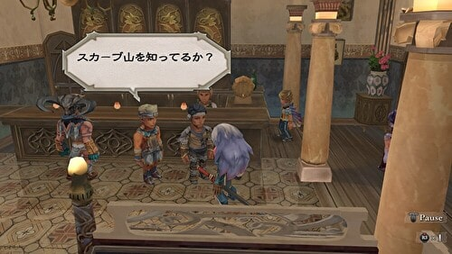
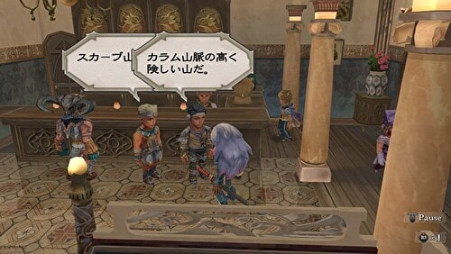
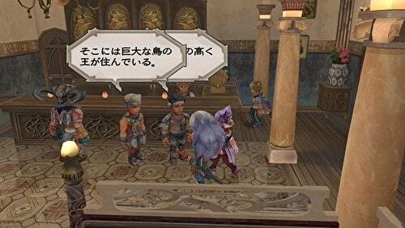
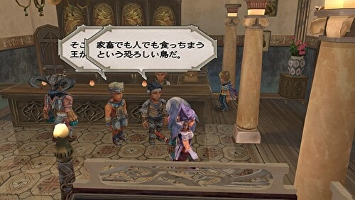
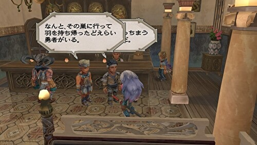
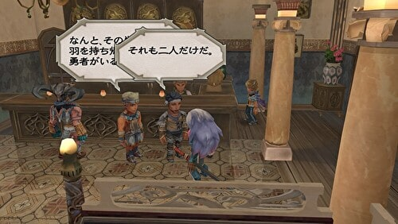
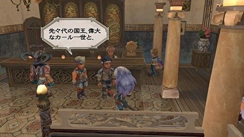
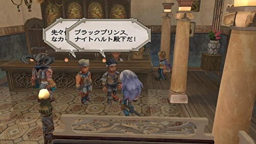
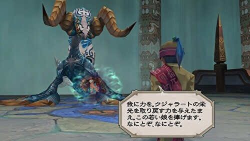

カール１世
ホーム > ミンサガ index > マルディアスの歴史 > カール１世
→ユスフからの続き。
カール１世
カール１世は、ナイトハルト同様、スカーブ山からタイニィフェザーの羽を持ち帰った勇者とされる人です。








#ロマサガ #ミンサガRS #ミンサガリマスター
— 河津秋敏 (@SaGa30kawazu) December 24, 2022
エスタミルを手にした勢いのまま、クジャラートはさらに東へと進みます。そしてアルツール近郊でローザリアと激突し、大敗を喫します。ローザリア軍を率いていたのはカール１世。生ける伝説に新たな一ページが付け加えられたのです。
#ロマサガ #ミンサガRS #ミンサガリマスター
— 河津秋敏 (@SaGa30kawazu) December 25, 2022
カール１世がまだ皇太子の時、ヨービルの反ローザリア派が蜂起し、帝国軍を呼び入れます。帝国は同時にイスマス城を包囲します。イスマス城が包囲された事で付近の魔物達の活動も活発になります。この危機にカールはまず魔物の討伐を優先します。
#ロマサガ #ミンサガRS #ミンサガリマスター
— 河津秋敏 (@SaGa30kawazu) December 26, 2022
魔物討伐を優先したローザリアの評判は高まりました。その後カールはイスマス城救援に向かう姿勢をみせます。これはヨービルにいる帝国軍を引っ張り出す計略でした。カールは新編成の騎兵部隊をアルツール付近に秘かに集結させていたのです。
#ロマサガ #ミンサガRS #ミンサガリマスター
— 河津秋敏 (@SaGa30kawazu) December 27, 2022
皇太子カールはヨービルから北方へ向かって進軍していた帝国軍を捕捉すると騎兵による急襲を敢行しました。帝国軍は壊乱しヨービルに向かって敗走します。カールはヨービルまで追撃し、ヨービル市民に和平案を提示します。
#ロマサガ #ミンサガRS #ミンサガリマスター
— 河津秋敏 (@SaGa30kawazu) December 28, 2022
ヨービル市民はカールの完全な自治権を含む和平案を受け入れ、帝国軍を船に乗せて追い払います。後方の安全を確保したカールはゆっくりとイスマス救援に向かいます。ヨービルを失っては利益になりません。帝国は金の掛かるイスマス包囲を解き撤退しました。
#ロマサガ #ミンサガRS #ミンサガリマスター
— 河津秋敏 (@SaGa30kawazu) December 29, 2022
王位を継いだカールはローザリア軍を騎兵中心に完全に作り替えます。そこへ侵攻してきたのがクジャラートだったのです。アルツールの戦いでは、クジャラート主力の弓兵が騎兵に分断され、力を発揮出来ぬまま粉砕されてしまいます。
#ロマサガ #ミンサガRS #ミンサガリマスター
— 河津秋敏 (@SaGa30kawazu) December 30, 2022
大きな打撃を受けたクジャラートでしたが、首都をエスタミルに移し、国力を増大させます。そして東への拡張を諦め、ユーエン大陸の南部騎士団領に狙いを定め攻撃を仕掛けます。コパー峠の戦いは騎士団の体力を奪っていき、騎士団は各国に救援を求めます。
#ロマサガ #ミンサガRS #ミンサガリマスター
— 河津秋敏 (@SaGa30kawazu) December 31, 2022
騎士団は世界中の大小様々な勢力の手助けをしてきました。今回の存亡の危機に世界中に助けを求めます。しかし救援に駆けつけたのはただ一人、ローザリア王カール１世だけでした。ローザリア軍も騎兵を運べる船はわずかだったので、主力は歩兵でした。
#ロマサガ #ミンサガRS #ミンサガリマスター
— 河津秋敏 (@SaGa30kawazu) January 1, 2023
ローザリア軍来援の報はクジャラート側にも届いていました。彼らは騎士団が強化される前にとがむしゃらに攻勢を掛け、コパー峠の砦の幾つかを陥落させ、ミルザブールへ殺到します。しかしこれはカール1世の作戦でした。
#ロマサガ #ミンサガRS #ミンサガリマスター
— 河津秋敏 (@SaGa30kawazu) January 2, 2023
兵数で劣っていても野戦であれば勝てる自信がカールにはありました。ミルザブールの城壁を守る最低限の守備兵を残し、ローザリアと騎士団連合軍は野外に伏せていたのです。そしてクジャラート軍の城攻めが佳境に達した時に背後から攻撃を掛けました。
#ロマサガ #ミンサガRS #ミンサガリマスター
— 河津秋敏 (@SaGa30kawazu) January 3, 2023
クジャラート軍は大混乱に陥りますが、兵数に優る分徐々に体勢を立て直します。勝負所を感じ取ったカール1世は少数の騎兵を率い敵の主力である弓兵隊に突撃します。この攻撃で主力を破られたクジャラート軍はバラバラになりました。ローザリアの勝利です。
#ロマサガ #ミンサガRS #ミンサガリマスター
— 河津秋敏 (@SaGa30kawazu) January 4, 2023
カール1世は再びクジャラート軍を打ち負かしましたが、その勝利を目にする事はありませんでした。若いクジャルの射手が放った矢がカールの鎧を貫いたのです。その矢は水竜の祝福を受けていたと言われます。しかしその射手も戦場に倒れました。
詩人の詩に、「水竜とクジャルの娘の語り」というものがあります。これはカール１世に土地を奪われたクジャル族が水竜に助けられた話なんですかね。河津さんのツイートの「カールの鎧を貫いた矢が水竜の祝福を受けていた」というのも、クジャル族は水竜に護られていたからなのでしょう。
クジャラートの栄光を取り戻すために水竜に若い娘を捧げようとしたこの男（トゥマン）は、殆どのクジャル族が忘れてしまったこの話のことを知っていたから、このような行動に出たのでしょうね。

#ロマサガ #ミンサガRS #ミンサガリマスター
— 河津秋敏 (@SaGa30kawazu) January 5, 2023
クジャラートは多くの兵士を失い、ローザリアは一人の王を失いました。両国の拡張の季節は終わり、内政の充実と政争の時期が訪れます。我々は再び帝国へと目を向けましょう。
ここに一匹の竜がいました。竜はエロールに人間にして欲しいと頼みます。
→次は海賊シルバー。
→年表に戻る。